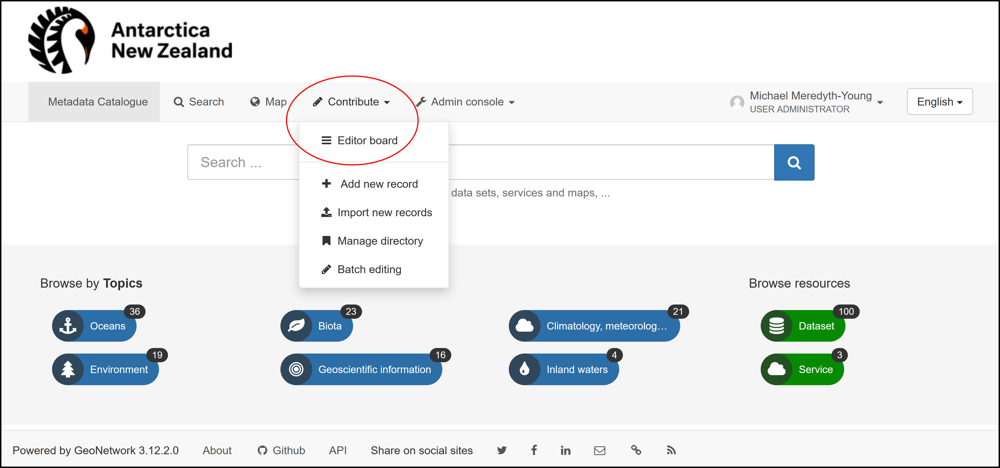
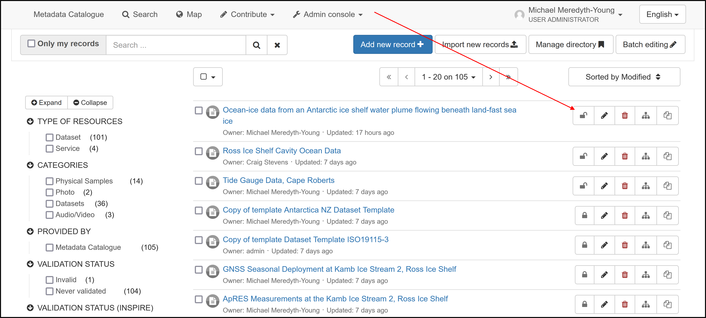
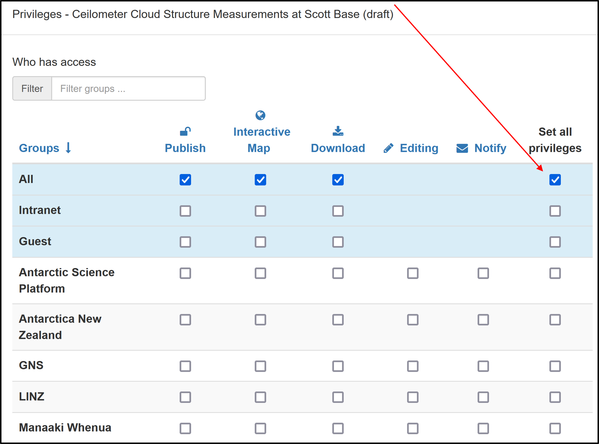
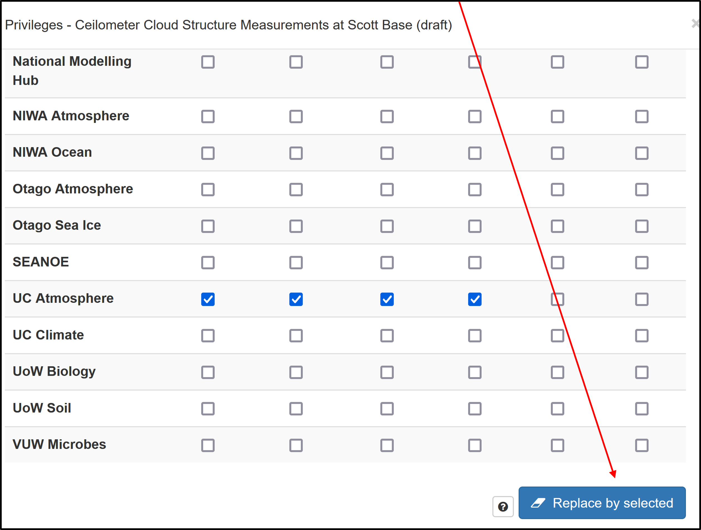

Publish Metadata# LAUNCH THE CATALOGUE 1. Sign in - Your Account# 2. Navigate to Contribute > Editor board ….#  3. Locate metadata record > unlock ….#  4. Enable “All” privileges ….#  5. Scroll down > Replace by selected ….#  6. Metadata is now published and available#